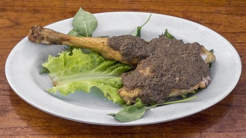

AYAM GULAI KHAS BATAK
Mie gomak adalah adalah makanan yang terkenal
yang berasal dari tanah Batak,tepatnya di Sibolga dan Tapanuli.
Mie kering yang berbentuk seperti lidi dan menyerupai spaghetti
Italia dengan warna kuning ke jingga. Tak jarang mie gomak sering
juga disebut dengan spaghetti Batak.
Rp 15.000,-
>ORDER NOW<
